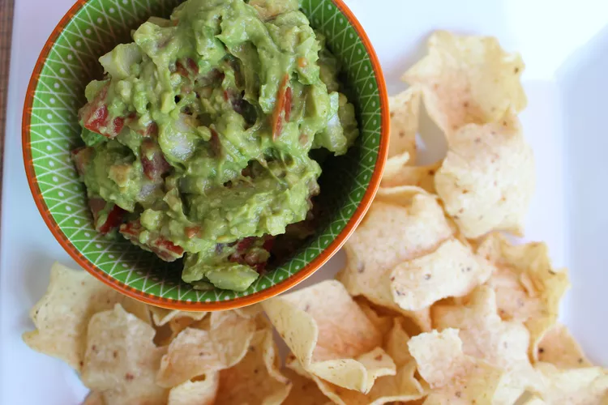

Easy Guacomole

Quick and easy guacomole
Easy and delicious guacomole you can make anytime, as long as you have a few ingredients
Ingredients
- 2 ripe avocados, peeled and pitted
- 1 small onion, finely chopped
- 1 ripe tomato, chopped
- 1 clove garlic, minced
- 1 lime, juiced
- salt and pepper to taste
Steps
-
Mash avocado in a medium serving bowl.
Stir in onion, tomato, and garlic.
Season with lime juice, salt, and pepper.
- Cover and chill guacamole for 30 minutes to allow flavors to blend.